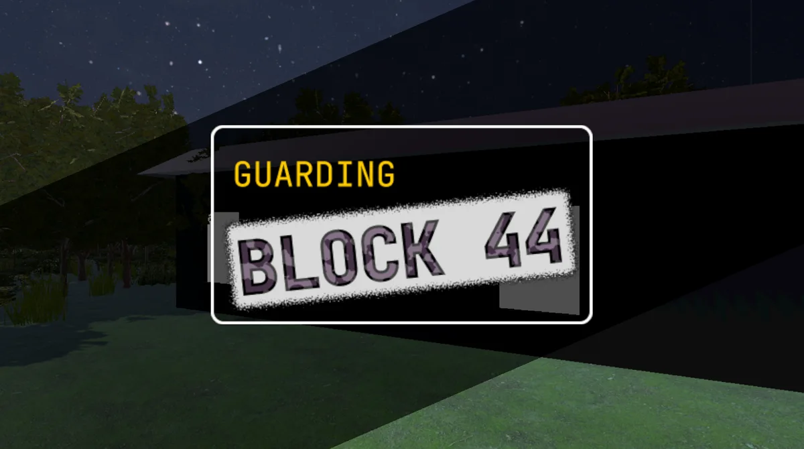

Lim Yan Chun
Technical art · Shaders, gameplay effects, and rendering optimisation
Project Meshi
Fog of war
I used an exploration mask to track which parts of the map the player had visited. A post-process shader uses that mask to animate the fog boundary.
A second mask marks the playable area. The fog thickens when the player crosses out of it and recedes when they step back.
Player outline
I tied the outline to the tall-grass detector. The outline switches on when the player enters cover and switches off when they leave. In the clip, the player walks deep enough into the patch that the foliage hides most of the character.
Guarding Block 44

I led graphics on our four-person jam team, modelled the foliage, and built the night sky in Unity Shader Graph.
I grouped grass and foliage by mesh for GPU instancing, culled distant foliage, and reduced shadow-map resolution for the WebGL build.
Play Guarding Block 44 on itch.io16% gain across the combined changes. Three matched camera sweeps per build in Chrome at 1920 × 1200 on a Radeon RX 5700 XT.